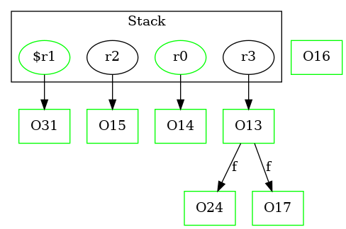

-1 : r2 := @this: Test1A
-1 : r3 := @parameter0: Test2Node
-1 : r0 := @parameter1: Test2Node
31 : $r1 = new Test2Node ->class soot.jimple.internal.JAssignStmt {Left: class soot.jimple.internal.JimpleLocal, Right: class soot.jimple.internal.JNewExpr}
31 : specialinvoke $r1.|Test2Node: void |init|()|()
31 : r0.|Test2Node: Test2Node f| = $r1
32 : return
